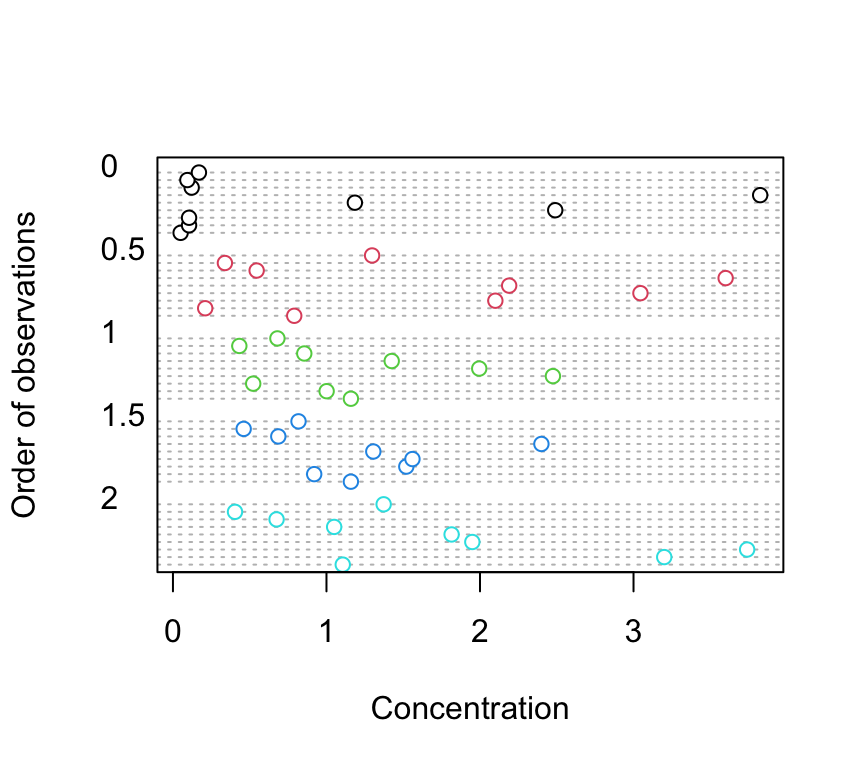
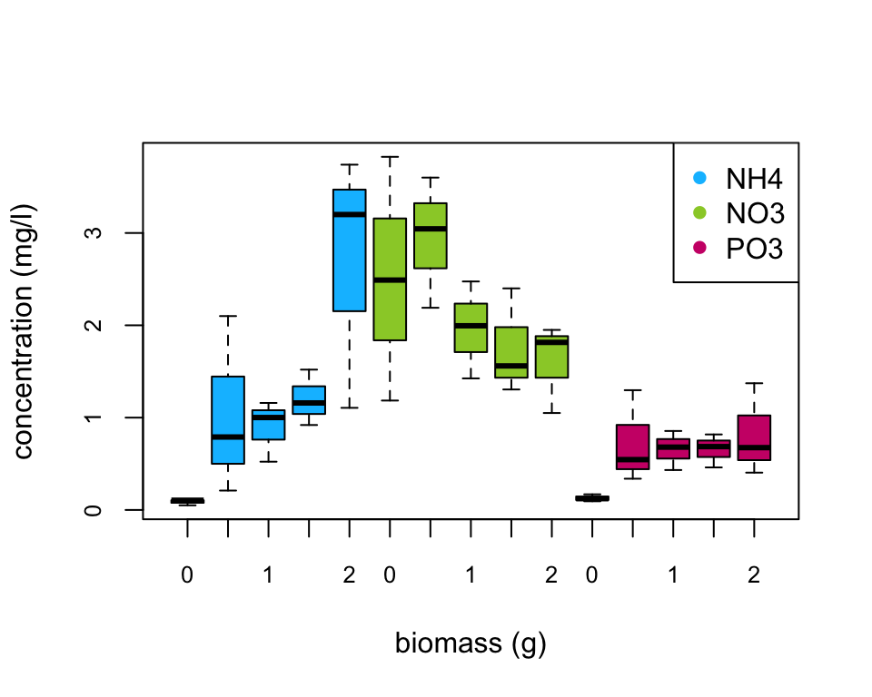
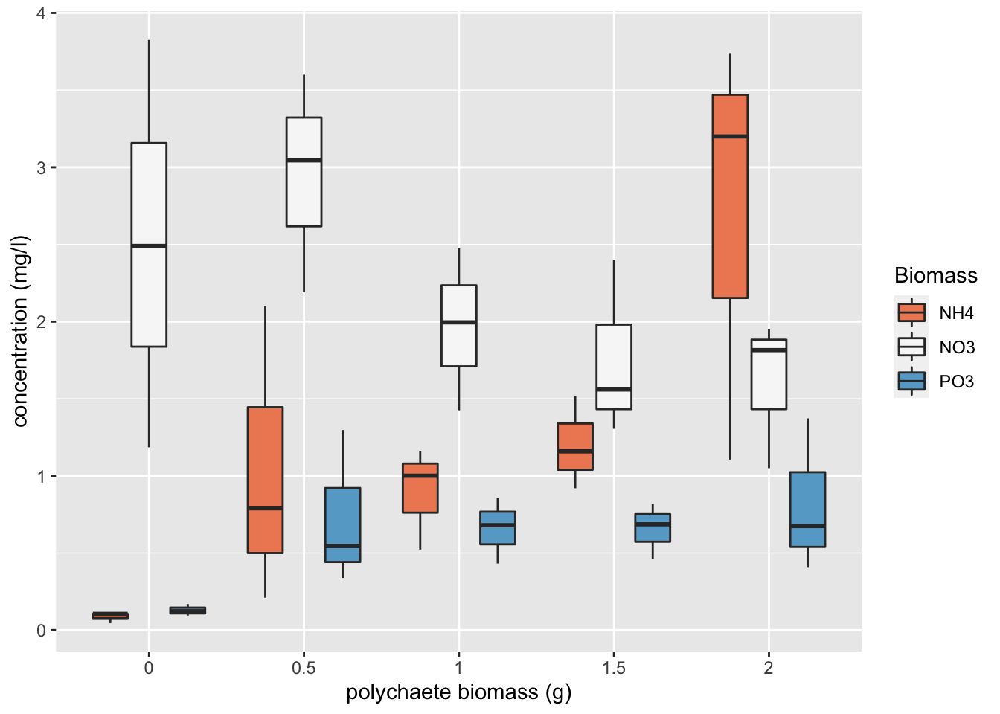

BI5302 Hediste case study practical
Alex Douglas
11 November, 2020
Setup global options for knitr package. Normally I wouldn’t display these but I’ll leave them here for your information. The arguments width.cutoff and tidy = TRUE keeps the displayed code within the code boxes (see what happens if you omit this).
knitr::opts_chunk$set(echo=TRUE,tidy.opts=list(width.cutoff=55),tidy=TRUE)
Benthic Biodiversity experiment
These data were obtained from a mesocosm experiment which aimed to examine the effect of benthic polychaete (Hediste diversicolor) biomass on sediment nutrient (NH4, NO3 and PO3) release. At the start of the experiment replicate mesocosms were filled with homogenised marine sediment and assigned to one of five polychaete biomass treatments (0, 0.5, 1, 1.5, 2 g per mesocosm). The mesocosms were allowed to acclimatise for 24 h after which the concentration of either NH4, NO3 or PO3 was measured in the water. The concentration of only one nutrient was measured in each mesocosm. The researchers were particularly interested in whether the nutrient concentration differed between polychaete biomass treatments and whether these effects were dependent on the nutrient.
1. Create a new R markdown document in your BI5302 RStudio project and save it using a suitable file name. I suggest you specify the default output format as html but feel free to experiment with pdf (you can always change this later). Use this R markdown document to record your data exploration, statistical analysis (including graphs and tables) and commentary. For this exercise I would also suggest that you embed your R code as visible chunks within the document (use echo = TRUE) for later reference.
Import all the packages required for this exercise:
library(nlme)
library(effects)
library(ggplot2) # this is optional (see bonus code at the end)
2. Import the Hediste.txt dataset into R and assign it to a suitably named variable. Remember if you’re using R version > 4.0.0 (most of you will be) then columns containing character strings will be imported into R as character type variables not as factors by default. You can either use the argument stringsAsFactors = TRUE when you use the read.table() function to automatically convert character type variables to factors when you import your data or you can use the read.table() function without the stringsAsFactors = TRUE argument and then covert them after you import your data. Examine the structure of the dataframe and convert the biomass variable to a factor and store it as a new variable in your dataframe.
nereis <- read.table("data/Hediste.txt", header = TRUE,
stringsAsFactors = TRUE)
nereis$fbiomass <- factor(nereis$biomass)
str(nereis)
## 'data.frame': 45 obs. of 4 variables:
## $ concentration: num 0.05 0.105 0.105 0.79 0.21 ...
## $ biomass : num 0 0 0 0.5 0.5 0.5 1 1 1 1.5 ...
## $ fnutrient : Factor w/ 3 levels "NH4","NO3","PO3": 1 1 1 1 1 1 1 1 1 1 ...
## $ fbiomass : Factor w/ 5 levels "0","0.5","1",..: 1 1 1 2 2 2 3 3 3 4 ...
3. How many replicates are there for each biomass and nutrient combination?
xtabs(~fbiomass + fnutrient, data = nereis)
## fnutrient
## fbiomass NH4 NO3 PO3
## 0 3 3 3
## 0.5 3 3 3
## 1 3 3 3
## 1.5 3 3 3
## 2 3 3 3
There are 3 replicates per fbiomass and fnutrient combination.
4. Explore these data graphically. Are there any obvious outliers in the concentration variable for each of the biomass or nutrient variable levels (perhaps the dotchart() function with the group argument might help)? Use an appropriate plot to examine whether there are any biomass and/or nutrient effects on concentration (perhaps a boxplot?). Do you notice a potential issue regarding the between group variances?
dotchart(nereis$concentration, groups = nereis$fnutrient,
col = as.numeric(nereis$fnutrient), xlab = "Concentration",
ylab = "Order of observations")
dotchart(nereis$concentration, groups = nereis$fbiomass,
col = as.numeric(nereis$fbiomass), xlab = "Concentration",
ylab = "Order of observations")
There doesn’t appear to be any obvious outliers in the concentration variable for the fbiomass and fnutrient groups.
Are there any differences in concentration between the biomass treatment? Are these differences dependent on the type of nutrient? Let’s use a boxplot to explore this further (see the end of this document for an alternative approach to creating this boxplot using the ggplot() function).
boxplot(concentration ~ fbiomass * fnutrient, xlab = "biomass (g)",
main = "", ylab = "concentration (mg/l)", data = nereis,
cex.axis = 0.8, col = rep(c("deepskyblue", "yellowgreen",
"deeppink3"), each = 5), names = rep(c(0, 0.5, 1,
1.5, 2), 3))
legend("topright", col = c("deepskyblue", "yellowgreen",
"deeppink3"), legend = c("NH4", "NO3", "PO3"), pch = 16)
There does appear to be a difference in the nutrient concentration between biomass treatments and this seems to be dependent on the nutrient type. Overall, NO3 has the highest nutrient concentration compared to NH4 and PO3. Nutrient concentration appears to be consistently low for PO3 regardless of polychaete biomass whereas for NH4 the concentration increases with biomass and for NO3 the concentration decreases with an increase in biomass. This suggests that there is an interaction between biomass and nutrient type.
5. With reference to the study aims stated above, fit an appropriate linear model to these data using the lm() function.
nereis.lm <- lm(concentration ~ fbiomass * fnutrient, data = nereis)
The code above fits a linear model using the lm() function with concentration as the response variable and fbiomass and fnutrient as explanatory variables. It also includes an interaction between fbiomass and fnutrient.
6. Use appropriate residual plots to identify whether the modelling assumptions are met. Don’t forget to also plot the residuals from this model against all explanatory variables. Can you see a problem? Can you assume homogeneity of variance of the residuals from your model? If not, then try to identify the cause of this problem. Make sure you describe and discuss this process in your R markdown document.
First let’s create the usual residual plots using the plot() function on the lm model object nereis.lm. Don’t forget to split the plotting device into 2 rows and 2 columns so we can visualise all the plots together.
par(mfrow = c(2, 2))
plot(nereis.lm)
From the Residual vs Fitted and Scale-Location plots (left-hand side) you can clearly see that the residual variance is different for each of the treatment groups. Larger fitted values have a wider spread and small fitted values a narrower spread. This is a clear violation of the homogeneity of variance assumption!
Let’s try to find which of the explanatory variable(s) is responsible for these differences in residual variance. First we plot the residuals from our linear model against the fbiomass variable.
plot(resid(nereis.lm) ~ nereis$fbiomass, xlab = "Biomass",
ylab = "Residuals")
abline(h = 0, lty = 2, col = 2)
There are clear differences in the residual variance between each of the biomass levels. The zero biomass treatment has very little residual variance (as we might expect - why?) whereas the highest biomass group (2 g) has a very large within group variance. There are also differences between the other biomass groups but these are less pronounced.
We should also plot the residuals from our model against the fnutrient explanatory variable.
plot(resid(nereis.lm) ~ nereis$fnutrient, xlab = "Nutrient",
ylab = "Residuals")
abline(h = 0, lty = 2, col = 2)
Again, the residual variance between the three nutrient types is different. The PO3 nutrient appears to have the smallest variance whereas the NO3 nutrient has the largest variance. Both of these plots suggest that the cause of our heterogeneity of variance is both the fbiomass and fnutrient variables. Therefore we need fit a model that allows for different variances in each of our fbiomass and fnutrient variables. To do this we will fit a Generalised Least Squares model using the gls() function from the nlme package.
Bonus code!
An alternative method to create a boxplot using the ggplot() function from the ggplot2 package. We haven’t introduced you to ggplot2 but if you are interested see Chapter 5 of our ‘Introduction to R’ book.
library(ggplot2)
ggplot(nereis, aes(x = fbiomass, y = concentration, fill = fnutrient)) +
geom_boxplot() + labs(x = "polychaete biomass (g)",
y = "concentration (mg/l)", fill = "Biomass") + scale_fill_brewer(palette = "RdBu")
###Session Information
sessionInfo()## R version 4.0.3 (2020-10-10)
## Platform: x86_64-apple-darwin17.0 (64-bit)
## Running under: macOS Catalina 10.15.7
##
## Matrix products: default
## BLAS: /System/Library/Frameworks/Accelerate.framework/Versions/A/Frameworks/vecLib.framework/Versions/A/libBLAS.dylib
## LAPACK: /Library/Frameworks/R.framework/Versions/4.0/Resources/lib/libRlapack.dylib
##
## locale:
## [1] en_GB.UTF-8/en_GB.UTF-8/en_GB.UTF-8/C/en_GB.UTF-8/en_GB.UTF-8
##
## attached base packages:
## [1] stats graphics grDevices utils datasets methods base
##
## other attached packages:
## [1] ggplot2_3.3.2 effects_4.2-0 nlme_3.1-150 car_3.0-10 carData_3.0-4 lattice_0.20-41 formatR_1.7
## [8] kableExtra_1.3.1 pander_0.6.3 knitr_1.30
##
## loaded via a namespace (and not attached):
## [1] matrixStats_0.57.0 rms_6.0-1 insight_0.10.0 webshot_0.5.2 RColorBrewer_1.1-2 httr_1.4.2
## [7] tools_4.0.3 backports_1.2.0 R6_2.5.0 rpart_4.1-15 DBI_1.1.0 Hmisc_4.4-1
## [13] colorspace_1.4-1 nnet_7.3-14 withr_2.3.0 tidyselect_1.1.0 gridExtra_2.3 curl_4.3
## [19] compiler_4.0.3 rvest_0.3.6 quantreg_5.75 htmlTable_2.1.0 SparseM_1.78 xml2_1.3.2
## [25] sandwich_3.0-0 labeling_0.4.2 scales_1.1.1 checkmate_2.0.0 polspline_1.1.19 mvtnorm_1.1-1
## [31] stringr_1.4.0 digest_0.6.27 foreign_0.8-80 minqa_1.2.4 rmarkdown_2.5 rio_0.5.16
## [37] base64enc_0.1-3 jpeg_0.1-8.1 pkgconfig_2.0.3 htmltools_0.5.0 lme4_1.1-25 highr_0.8
## [43] htmlwidgets_1.5.2 rlang_0.4.8 readxl_1.3.1 rstudioapi_0.11 farver_2.0.3 generics_0.1.0
## [49] zoo_1.8-8 dplyr_1.0.2 zip_2.1.1 magrittr_1.5 Formula_1.2-4 Matrix_1.2-18
## [55] Rcpp_1.0.5 munsell_0.5.0 abind_1.4-5 lifecycle_0.2.0 stringi_1.5.3 multcomp_1.4-14
## [61] yaml_2.2.1 MASS_7.3-53 grid_4.0.3 forcats_0.5.0 crayon_1.3.4 haven_2.3.1
## [67] splines_4.0.3 hms_0.5.3 pillar_1.4.6 boot_1.3-25 codetools_0.2-18 glue_1.4.2
## [73] evaluate_0.14 mitools_2.4 latticeExtra_0.6-29 data.table_1.13.2 png_0.1-7 vctrs_0.3.4
## [79] nloptr_1.2.2.2 MatrixModels_0.4-1 cellranger_1.1.0 gtable_0.3.0 purrr_0.3.4 xfun_0.19
## [85] openxlsx_4.2.3 survey_4.0 rsconnect_0.8.16 survival_3.2-7 viridisLite_0.3.0 tibble_3.0.4
## [91] conquer_1.0.2 tinytex_0.27 cluster_2.1.0 statmod_1.4.35 TH.data_1.0-10 ellipsis_0.3.1